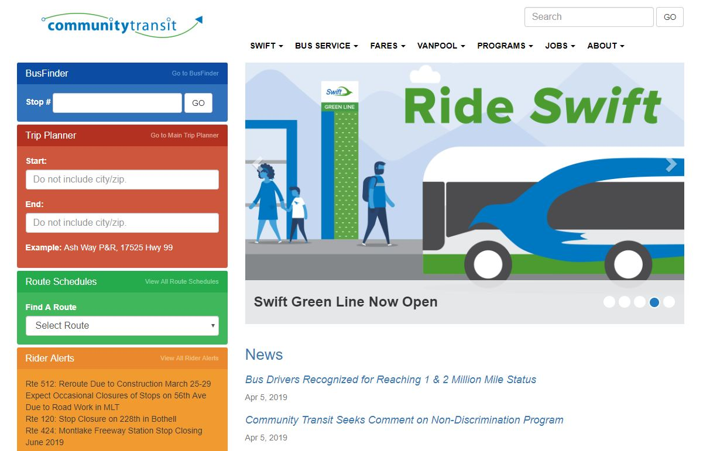
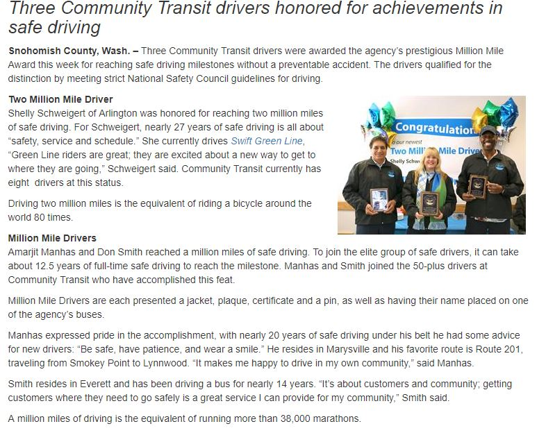

Case Study: Community Transit
Usability is everyting in a website or web app. As web users we often come across sites or apps which for whatever reason do not work. This week I had a run-in with the Community Transit website and wanted to share my user notes.
A little background:
Community Transit operates public transportation within Snohomish County (North of King County). With the influx of people moving to the Greater Seattle Area, the roadways of Snohomish County are often clogged with commuters rushing to the metropolitan areas (Bellevue, Redmond, Seattle, Lynnwood) in the morning and fleeing back home in the evening.
The influx of vehicles has put a great deal of stress on the infrastructure. As of right, there are only two freeways (I-5 and I-40) and a handful of local highways (hwy 9, 2, 99...etc.) to handle the load.In order to combat this traffic, Community Transit has started service of what they call the "Swift Line". These are rapid commuter buses that connect to major transit hubs throughout King and Snohomish County (think Lightrail, but without the hardware) with the goal to make the bus easy and quick enough to take that residents will start to see the bus system as a viable commute option.
The Website
For those of you following along at home, I'm looking at the Community Transit website.
The purpose of this Website is to provide residents and visitors of Snohomish County, Washington information regarding county-wide public transportation.
The Criteria
I have separated my evaluation into 4 areas of Opportunity:
- Design - How easy is the website to read? Are there any color contrast issues or font sizing issues that make it difficult to use the site?
- Content- Is the information provided concise and easily digestible?
- Function -Am I able to easily perform the functions that I want to?
- Creativity - Does this website have "sticking power" am I dawn back to this site because of the content, the images, the design?
Design
 Screenshot of the Community Transit HomepageThe Community Transit website is very clean on first view. What I would expect to be the most pertinent content (Locating bus, Planning a Trip, Route Schedules, and Rider Alerts) are housed in a Blue, Red, Green, and Orange box respectively on the left-hand side of the page.
On the right, additional primary information (Swift, Bus Service, Fares, Vanpool, Jobs, and About) is listed horizontally each with its own drop-down menu. There is an image carousel with hyperlinked images to take you to parts of the page pertaining to the image currently displayed. Below the image there is a spot for recent news, hyperlinked to the news story. The content floats over a clean white background.
The website does well to avoid visibility difficulty. Most of the text is either black/blue text on top of a white background or, if the background is dark, there is bold white text. The one spot that breaks this rule is the orange box for "Rider Alerts" currently the alerts are black or grey on top of orange which is not the easiest thing to read, but it is legible.
Content
The website packs in a lot of information. It's mostly provided in manageable chunks. But the paragraphs become giant walls of text which isn't drawing me into read more. It would be a simple fix to make the reading easier: Simply divide up the more monstrous paragraphs into more manageable content chunks for parsing.
 Sample of Text from community Transit NewsAdditionally, the bus schedules themselves do pretty well, there is a bus stop and a time, can't go wrong with that.
My major complaint with the schedules was that
they were harder to find than I anticipated, this is more of a function issue but the schedules/route maps were buried in the site.
Function
This is where this site gets messy, I chose this site to review because last week I spent quite a bit of time on the website trying to see if there was a way for me to make it to and from work (Snohomish to Totem Lake) via bus. Public transportation in Snohomish County is sparse so I wanted to encourage these latest route updates with ridership.
Here's how my introduction to the Community Transit Site went, I was a new user using the website for the first time:
- Arrived at the site, looking for buses in my area. Top left, "Bus Finder". Sounds perfect...It wants a stop number, not my address.
Ok, that won't work; I don't know any stops close to me. - Below the Bus Finder is the Trip Planner, that sounds promising.
Enter in my address to start, ok it auto filled and that's right. Now the end location.
It can't find the address...and the search tool will not include city or zip.
Hmmm, I wonder if I can Google a transit hub close to work to use instead? - This was when I realized that I was using Google to find information specific to what I was looking for on the website. I, as the user had left the
page to find the information I needed.
In the world of websites, this is not good.
There was so much information on the site, but the information I really needed was very hard to find.
Creativity
Although I'm pleased with the color scheme and basic layout I am not drawn to this website at all. I am not happy to come back and check updates about public transit in Snohomish County. As a user, I was very frustrated when I tried to use the site.
I can understand why so many people out here are unwilling to use the bus, they do not understand where the bus runs, how often it runs, or even where it goes.
As more and more people move the region and traffic piles up (even more) public transportation is a cheap way to keep cars off the road and keep traffic corridors open to commuters.
The simplistic nature of the Community Transit website hides user issue after user issue. The website seems to be built more to house information and news regarding Community Transit updates and projects rather than using the site to actually locate a bus or plan a trip.
Modest Proposal
For me as the user, the most important thing was finding transit in my area. I was shocked that there wasn't a tool for me to enter my address and search for stops in my immediate vicinity.
The Bus Finder Tool implies that I should be exploring the area on foot and writing down the numbers of bus stops that I see in order to research their service routes later. It's not the most effective system.
The Trip Planner was not effective either, the search function does not allow for city or zip to be entered so if the tool does not have the address right the first time there is no way to enter in an address yourself. In the end, Google was able to find me a route, and I was able to see all of the bus stops in my area by reverse-engineering Google's suggestions.
After I knew what I was looking for, I went back to Community Transit to look at the route maps and schedules. Routes are grouped mainly by service locations (makes sense) but each route is kept separate from the others on separate pages.
From research, I knew that some of the busses overlapped on their route; I was surprised that I was unable to find a system map (or even a local system map) to see where the busses overlapped so that I could research alternative routes.
My biggest critique would be to allow a way for the user to locate the stops in their area easily. The user should not have to go to Google first and then come back armed with information.
Building on the search function, it would be amazing if the search brought up a local-route system page with a local comprehensive map of all routes within walking distance of the user's address. Bonus points if the local system map included annotations at stops serviced by connector busses. Essentially, provide a robust local network "hub" of transit options to get the user (bus rider in this case) from home to a bus and out to work or run errands with the shortest time possible.